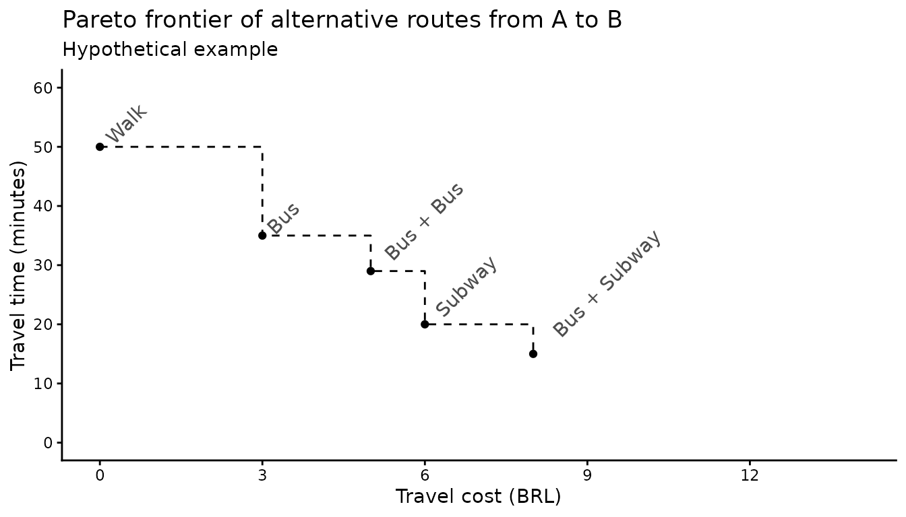
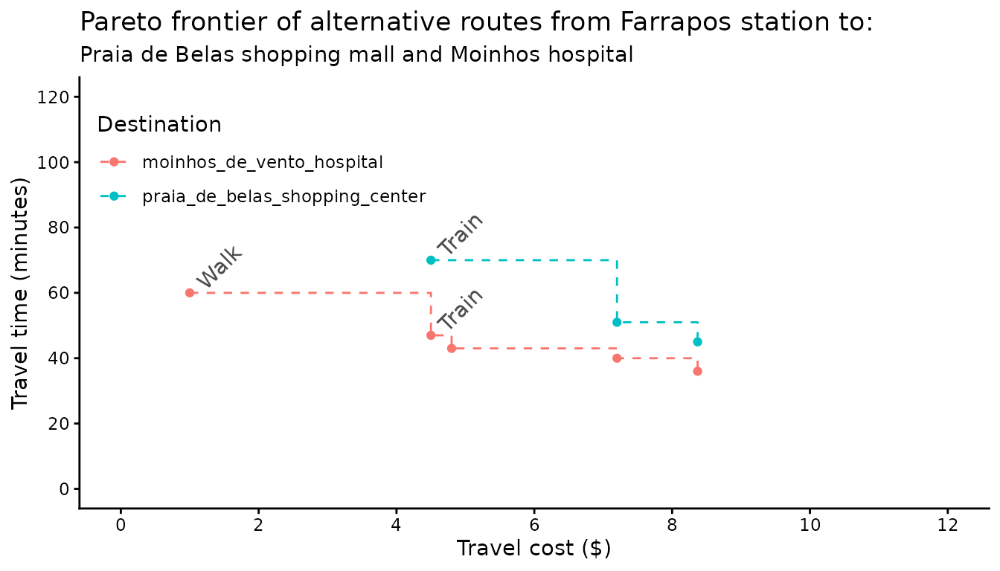

Trade-offs between travel time and monetary cost
2026-10-10
Source:vignettes/pareto_frontier.Rmd
pareto_frontier.RmdAbstract
This vignette shows how to use thepareto_frontier()
function to examine the trade-offs between travel time and
monetary cost in travel time matrices in r5r.
1. Introduction
Routing models usually find either the fastest or the cheapest route.
Accounting for both time and monetary cost at once is hard, because
minimizing trip duration and minimizing cost are competing objectives
(Conway and Stewart 2019). To address this
problem, r5r’s pareto_frontier() returns the
most efficient combinations of travel time and monetary cost between
origin/destination pairs. This vignette shows, with a reproducible
example, how to use it and interpret its results.
2. What the pareto_frontier means.
Imagine a trip from A to B with several route alternatives (figure below):
- Walking is the cheapest option but takes 50 minutes.
- Bus + subway is the fastest: 15 minutes for R$ 8.
- In between:
- a single bus: R$ 3, 35 min;
- two buses with one transfer: R$ 5, 29 min;
- walking to the subway: R$ 6, 20 min.
These options form the Pareto frontier of routes from A to B: no route is both faster and cheaper than any route on the frontier. On the frontier, a trip cannot be made faster without costing more, nor cheaper without taking longer.

The frontier shows the time-cost trade-offs that public transport
passengers face. It also supports cumulative-opportunity accessibility
metrics with both time and cost cutoffs (e.g. the number of jobs
reachable within 40 minutes and R$ 5) (Conway and
Stewart 2019). Let’s see a couple concrete examples showing how
r5r can calculate the Pareto frontier for multiple
origins.
3. Demonstration of pareto_frontier().
3.1 Build routable transport network with
build_network()
We use the Porto Alegre (Brazil) sample data included in
r5r.
# increase Java memory
options(java.parameters = "-Xmx2G")
# load libraries
library(r5r)
library(data.table)
library(ggplot2)
library(dplyr)
# build a routable transport network with r5r
data_path <- system.file("extdata/poa", package = "r5r")
r5r_network <- build_network(data_path)
# routing inputs
mode <- c('walk', 'transit')
max_trip_duration <- 90 # minutes
# load origin/destination points of interest
points <- fread(file.path(data_path, "poa_points_of_interest.csv"))3.2 Set up the fare structure
R5 computes the monetary cost of each route from the
fare rules of the public transport system. In Porto Alegre:
- A bus ticket costs R$ 4.80.
- A second bus ride adds R$ 2.40; subsequent bus rides cost the full R$ 4.80.
- A train ticket costs R$ 4.50, with unlimited train rides as long as the passenger does not leave the stations.
- The integrated bus + train fare has a 10% discount, totalling R$ 8.37.
A fare structure with these rules ships with r5r, so we
simply read it. The fare
structure vignette shows how to build one step by step.
fare_structure <- r5r::read_fare_structure(file.path(data_path, "fares/fares_poa.zip"))3.3 Calculating a pareto_frontier().
We compute the Pareto frontier from all origins to all destinations with these monetary cost cutoffs:
- R$ 1.00: walking only
- R$ 4.50: a train trip
- R$ 4.80: a single bus trip
- R$ 7.20: bus + bus
- R$ 8.37: bus + train
departure_datetime <- as.POSIXct("13-05-2019 14:00:00",
format = "%d-%m-%Y %H:%M:%S")
prtf <- pareto_frontier(
r5r_network,
origins = points,
destinations = points,
mode = c("WALK", "TRANSIT"),
departure_datetime = departure_datetime,
fare_structure = fare_structure,
fare_cutoffs = c(1, 4.5, 4.8, 7.20, 8.37),
progress = TRUE
)
#> Loading required namespace: testthat
head(prtf)
#> from_id to_id percentile travel_time monetary_cost
#> <char> <char> <int> <int> <num>
#> 1: public_market public_market 50 0 1.0
#> 2: public_market bus_central_station 50 23 1.0
#> 3: public_market bus_central_station 50 19 4.5
#> 4: public_market bus_central_station 50 14 4.8
#> 5: public_market gasometer_museum 50 29 1.0
#> 6: public_market gasometer_museum 50 13 4.8For illustration, the Pareto frontiers between the Farrapos train station and (a) the Praia de Belas shopping mall and (b) the Moinhos hospital:

Cleaning up after usage
Stop the network and run Java’s garbage collector to free the memory it used:
If you have any suggestions or want to report an error, please visit the package GitHub page.